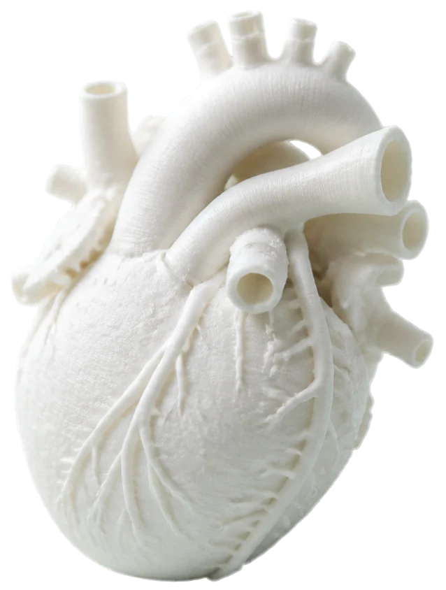
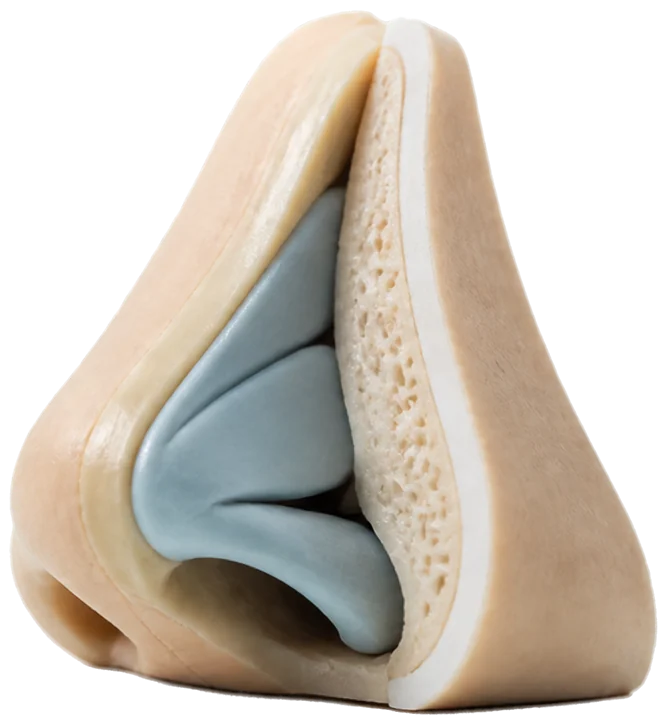
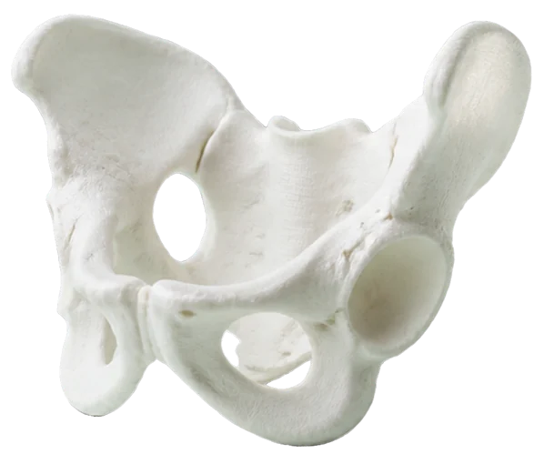
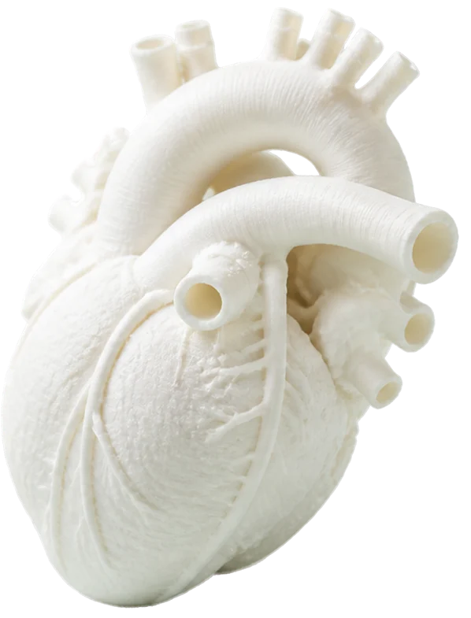
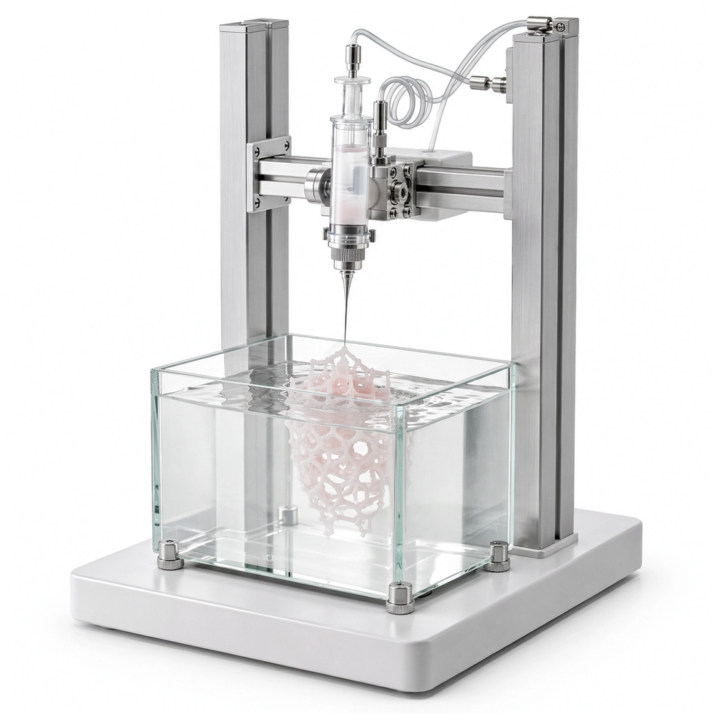

Entrenarla cirugíaantes de operar
Additive 3D Engineering
El problema
Los cirujanos practican con modelos genéricos o con animales.
Ninguno se parece a su paciente.
Falta práctica realista y repetible
0 M$
mercado en 2032

Nuestrosprototiposanatómicos
- Piel, cartílago y hueso con tacto real
- Se cortan y se suturan
- Prototipo de próstata con validación profesional

Piel
Cartílago
Hueso
Académico
Línea asequible
Para docencia.

Profesional
Alta fidelidad
Para profesionales, con un coste más elevado.

Varias líneas de investigación
Impresión en hidrogelRealidad mixtaLínea cerebral

Hidrogel
Biopolímero
Material de desarrollo
La fabricación aditiva es nuestro punto fuerte
Prototipo
Impresora
en hidrogel
Prototipo de impresora 3D de órganos en hidrogel, con biopolímero como matriz orgánica.
+0
Granja de impresoras
para crear moldes y prototipos.
Cómo lo hacemos
Del escáner del paciente al modelo para operar
01Imagen
- Resonancia y TAC
- Lectura de DICOM
- Datos anonimizados
02El paso clave
Segmentación
- Redes neuronales
- Varias redes y un árbitro
- Corrección con clics
- Tumor, vasos y hueso
03Modelo 3D
- Malla de cada estructura
- Escala de impresión
- STL y 3MF
04Molde
- Molde por piezas
- Vasos en relieve
- Tornillos y montaje
05Fabricación
- Impresión 3D
- Colada de silicona
- Piel, cartílago y hueso
06Gemelo digital
- Forma exacta de la pieza
- Seguimiento con las gafas
- Capas internas a la vista
Privacidad: los datos del paciente se anonimizan antes de procesarlos.
Cómo segmenta una red neuronal
Aprende con imágenes ya etiquetadas. Después etiqueta sola las nuevas.
- MiraRecorre la imagen con filtros que detectan bordes y texturas.
- ComprimeLa reduce paso a paso hasta saber qué estructuras hay.
- EtiquetaLa amplía de nuevo y decide, punto a punto, a qué estructura pertenece.
Simulación
Del pacienteal modelo
- 01
Imagen
Resonancia y TAC · Lectura de DICOM · Datos anonimizados
- 02
Segmentación
Redes neuronales · Varias redes y un árbitro · Corrección con clics · Tumor, vasos y hueso
- 03
Modelo 3D
Malla de cada estructura · Escala de impresión · STL y 3MF
- 04
Molde
Molde por piezas · Vasos en relieve · Tornillos y montaje
- 05
Fabricación
Impresión 3D · Colada de silicona · Piel, cartílago y hueso
- 06
Gemelo digital
Forma exacta de la pieza · Seguimiento con las gafas · Capas internas a la vista
0 de 27 estructuras
Explora el modelo con tus manos y visualiza estructuras internas y detalles que no se podrían conseguir con una impresión.
Software nativo en desarrollo
- Las gafas escanean la pieza
- El gemelo digital encaja encima
- Se ven las venas
Por qué somosdiferentes
Tacto real+Anatomía del paciente
en un mismo producto
Patente solicitada
-
Procesado en local
Las imágenes se analizan en el propio ordenador, sin subirlas a internet.
-
Anonimización
Fuera el nombre, los identificadores, la fecha de nacimiento, el centro y los médicos.
-
Sin trazabilidad
El modelo y sus archivos no llevan ningún dato que permita llegar al paciente.
Estudio DICOM
- Nombre
- eliminado
- Identificador
- eliminado
- Nacimiento
- eliminado
- Centro y médicos
- eliminados
- Fechas del estudio
- desplazadas
- Imagen
- intacta
Los datos no salen del equipo
Talento joven
En solo
0 meses
- Prototipos con tacto real
- Prototipo de próstata con validación profesional
- Prototipo de impresora en hidrogel
- Realidad mixta en desarrollo
- Patente solicitada
Que ningúncirujano operepor primera veza un paciente.
Ayúdanosa mejorarla medicina.
Gracias.
Additive 3D Engineering